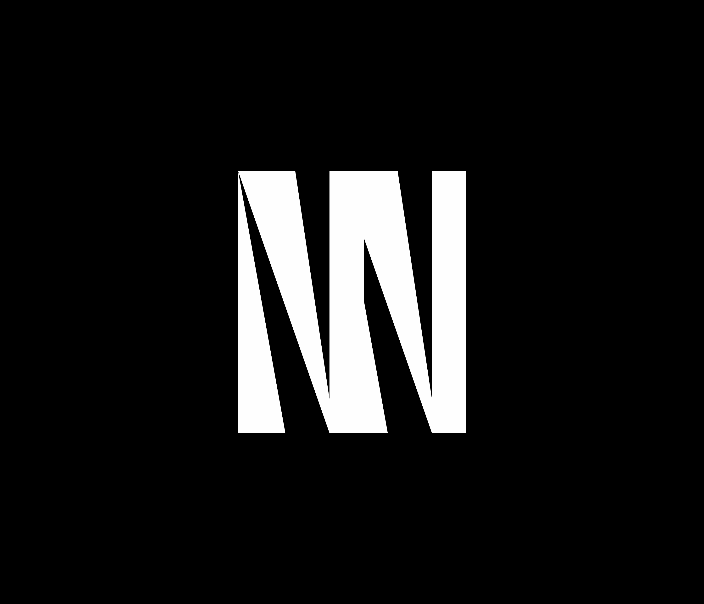

2019 / 12 / 21 up
N2ロゴ制作工程

こんにちは．
この記事をご覧になられている方々の中には，「こういうデザインのやり方に興味あります！」という人もいるのではないでしょうか．
Gimpは無料で使えてそこそこ機能が充実しているので，PhotoShopの購入を渋る場合は，Gimpを使っても十分だと思います．
基本何も考えていません．見切り発車なことが多いです．作業中にこの構想がいいんじゃないか，こういう奇抜な手を加えたら何か起きるんじゃないか，といった期待を織り交ぜた試行錯誤を「ひたすら繰り返す」ことが何より大事なんじゃないでしょうか．